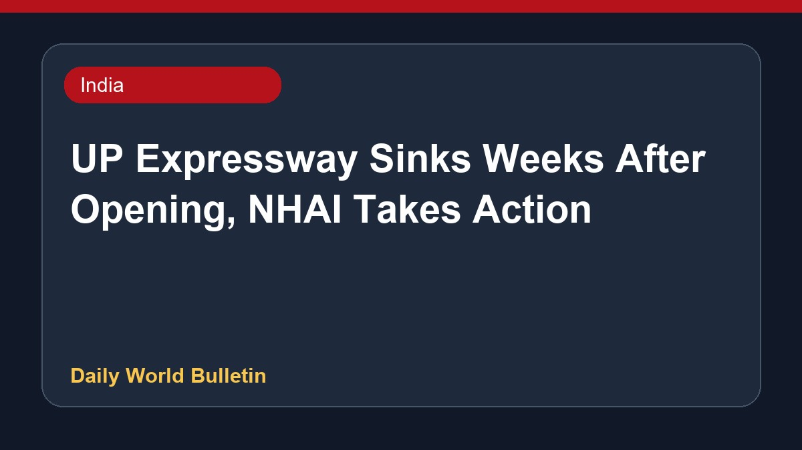

UP Expressway Sinks Weeks After Opening, NHAI Takes Action

The newly opened Lucknow-Kanpur Expressway has suffered a major setback after a 300-metre section sank just weeks after inauguration. Built at a cost of Rs 4,200 crore, the damaged stretch has been dug up for repairs. In response to the incident, the National Highways Authority of India suspended toll collection on the route and barred the responsible contractor from participating in future bidding processes. Meanwhile, political leaders have criticized the administration over the shoddy construction quality, drawing sarcastic remarks regarding remedial measures at the site.
Original source: India News Sources
Rs 4,200-crore UP expressway sinks within weeks of opening, road dug up again - indiatoday.in ↗
Rs 4,200-crore UP expressway sinks within weeks of opening, road dug up again - indiatoday.in ↗
Related News
 India
IndiaIAF officer arrested for leaking defence secrets to Pak handler
 India
IndiaDMK and allies boycott Tamil Nadu MPs' meet on delimitation called by CM Vijay
 India
IndiaPM Modi expresses disappointment over low number of female IIT Delhi medal winners
 India
India